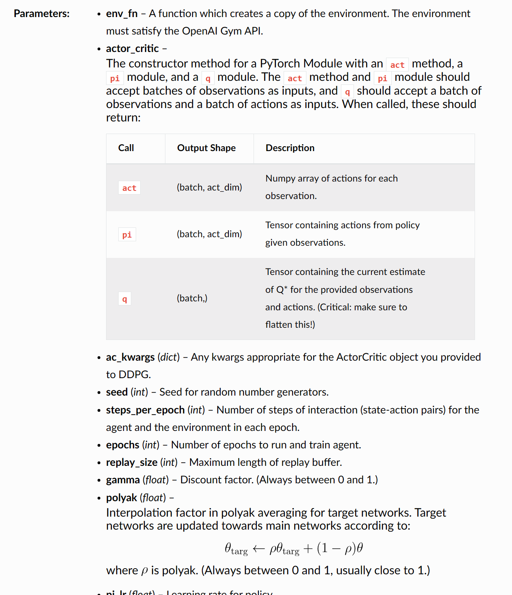
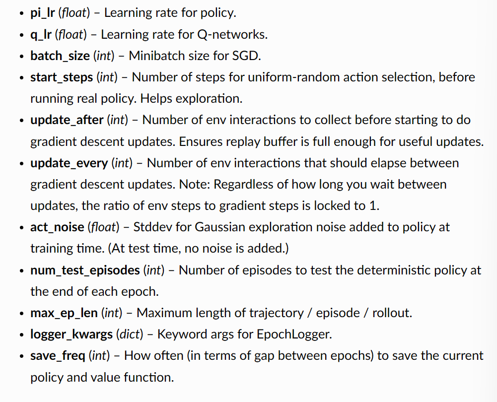

DDPG
Deep Deterministic Policy Gradient
Background
在过去的DQN实践中，我们更多的采用神经网络直接对状态s进行近似，映射分数到动作空间里然后再根据得分选择动作。这种方法在离散动作空间中表现良好，但是在连续动作空间中表现不佳。因为在连续动作空间中，动作空间的维度很高，而且动作空间的连续性使得我们无法直接使用神经网络来近似动作空间。因此，我们需要一种新的方法来解决这个问题。
Quick Facts
- DDPG is an off-policy algorithm.
- DDPG can only be used for environments with continuous action spaces.
- DDPG can be thought of as being deep Q-learning for continuous action spaces.
Key Equations
我们从两个角度理解DDSG，一个是Q-learning的角度，另一个是策略梯度的角度。
Q-learning角度
d的含义是是否结束，1表示结束，0表示未结束。
与之对应的Replay Buffer和Target Network都是可以用的。
需要注意的是，一般直接定期复制的Target Network，在DDPG中我们采用polyak averaging：
DDPG采用target policy network去近似一个action a’最大化。
策略梯度角度
我们希望我们预测的最优动作可以最大化，于是我们使用梯度上升去solve：
注意这里的Q-function参数是固定的，且因为按照前提条件，动作是连续的，也即可以微分的，故梯度是可以计算的。
Exploration v.s. Exploitation
DDPG用离线策略方法训练了一个确定性策略，因为这个策略是确定性的，所以我们需要一种方法来保证策略的探索性。因此，DDPG的原作者使用Ornstein-Uhlenbeck过程来增加策略的探索性。具体来说，为了让DDPG policies 探索得更好，我们添加nosie给各个actions在训练的时候。 OU noise和时间训练是相关的，但是实验中发现使用简单的mean-zero Gaussion noise同样表现很好。
最后在test的时候，我们不再使用noise，而是直接使用policy network输出的动作。
在实验中，我们可以先在一定步数内随机游走来提升exploration，然后再使用DDPG来训练。
Pseudocode
对clip的解释：
在这行代码中：
a是在状态s下由策略网络选取的动作。μ(s)是在状态s下，策略网络（通常是一个神经网络）给出的建议动作。ε是噪声项，它是从正态分布 ( N ) 中采样的，用于添加到策略网络输出的动作中，以引入探索。这个噪声使得策略有机会探索非最优的动作，这在训练初期是有益的，因为它可以帮助算法探索并发现更好的策略。clip函数将动作a限制在 这个范围内。这通常是因为实际问题中的动作空间是有界的，例如，一个机械臂的关节可能只能在某个角度范围内旋转。
所以整个表达式的意思是：根据当前策略和状态 s 选择一个动作，然后加上一些正态分布噪声来引入随机性，最后使用 clip 函数确保动作值在允许的范围内。这样既可以保证探索性，又可以确保动作的有效性。
some hyperparameter

